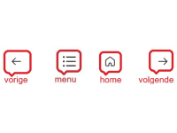

1. Welkom





Welkom in De Museumfabriek bij de audiotour "Offerschatten – Rituelen in het landschap van Overijssel".
Al vanaf ongeveer 4000 voor Christus brachten mensen offers, vaak op natte plekken zoals moerassen, vennen en rivieren. Dit gebruik bleef duizenden jaren bestaan, zelfs nog toen het christendom rond 768 na Christus kwam.
Vroeger leefden mensen dicht bij de natuur. Het landschap van Overijssel was moeilijk bewoonbaar, met moerassen en mysterieuze nevels. Zulke plekken werden als bijzonder gezien. Men dacht dat hier de wereld van mensen en die van goden of voorouders dicht bij elkaar lag.
Als mensen iets wilden vragen of ergens voor wilden bedanken, kozen ze een waardevol voorwerp: een bijl, sieraad, wapen, of mogelijk zelfs een mens. Deze offers brachten ze in veen en moeras. In het natte, zure milieu blijven materialen duizenden jaren bewaard – zelfs hout, leer, huid en haar. In deze tour ontdek je bijzondere plekken waar archeologen zulke offerschatten hebben gevonden.
Hoe werkt de tour?
Je gebruikt één QR-code. Klik op het pijltje rechtsboven om naar het volgende punt te gaan. Op de plattegrond zie je waar dat is. De tour duurt ongeveer 20 minuten.
Als er meer informatie is kun je op de knop "Meer info" klikken:

Je kunt ook een eigen volgorde kiezen via de plattegrond.
Voor meer uitleg over de knoppen klik op "help":
Luister met oortjes of lees mee op je scherm. Veel plezier!